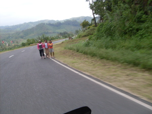

ilis1 
/ʔilis/
prep.
“side”
1.
n.
edge; side
Nakita ku si Antun ka migsesasindeg diyè te ilis te kelesadda.
I saw Antun standing on the side of the road.
Wrd.Gloss: edge
Eng. edge, an; side, a; margin; border, a
Tag. gílid; tabí
Ceb. daplin
Ilo.: ígid
OCM: Miscellaneous Structures (349)
Online dict status: -
Usage level: F
2.
n.
shore (of sea) or bank (of river)
Nakalangkeb a ka egpal-pallahuy diyè te ilis te dahat.
I fell over running there on the shore of the sea.
Wrd.Gloss: shore
Eng. shore; seashore; riverbank; bank of river; seaside; beach
Tag. baybáyin; tabíng-dágat; dalampasígan
Ceb. baybayon
Ilo.: ígid ti báybay
OCM: Ethnogeography (823)
DDP: River (1.3.1.3), Island, shore (1.3.1.5)
Online dict status: -
Usage level: M
vi.
for someone (egpahun-ilis, migpahun-ilis/impahun-ilis, pahun-ilis, agent, eg><ø-pA-hun-) to go along the edge of a river or to follow the coast
Egpahun-ilis ki naan dè te weyig ka eg-ulì su dakel e ka baggiyu.
We will go along the edge of the river when we go home because the flooding is big.
Eng. follow edge of river; go along beside river; river, follow; river, go along; follow coast; coast, follow; go along coast
Online dict status: -
Usage level: R
3.
v.
for someone (eg-ilis, mig-ilis/in-ilis/pig-ilis, ilis, agent, eg><ø-) to move or put aside something (ig-ilis, in-ilis, theme, ig><ø-) from one place to another (eg-ilisan, in-ilisan/mig-ilisan/pig-ilisan, ilisi, location, eg><an-)
Eg-ilis e pad te sinubba su egkatutungan e.
I will remove the cooked food becuse it's going to be burnt.
Awè ka due su eg-ilisan ku sika te sinubba, halin ka due.
Get out there, because I will place the cooked food there. Move to another place.
Ig-ilis kud e ka sinuba su egkatutungan e.
I am going to put aside the cooked because it's already burnt.
Eng. move something; put aside; aside, move something
OCM: Weight Moving (483)
Online dict status: -
Usage level: R
4.
v.
for someone (eg-ilis, mig-ilis/in-ilis/pig-ilis, ilis, agent, eg><ø-) to change their clothes (eg-ilisan, in-ilisan/mig-ilisan/pig-ilisan, ilisi, location, eg><an-)
Eng. change, to (clothes)
Online dict status: -
Usage level: L
Updated by: RJH,TME,AAA,QDL,NJK,RAA,QDL
Last updated: 21/Jan/2010
This page last updated: 28-Dec-2019
Copyright © 2009-2014, Matigsalug Language Christian Association, Inc